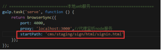

上回我们搭建了初始化的项目工程，接来我们处理热编译和热更新的相关功能。
所谓热编译是指：我在local目录下开发，改变了html或者js文件，自动执行gulp打包任务，打包到staging目录对应的模块目录下
所谓热更新是指：打包之后需要手动刷新浏览器，那么能不能改了local下的文件，自动打包到staging下，并且自动刷新浏览器看到效果
我们首先实现热编译的功能
热编译对应的是local目录下的html文件、css文件、图片和js文件，上一回我们其实已经在gulpfile.js的‘watch’任务中实现了html文件的热编译
什么，你又忘了？那再来一次
// ========================监听CMS模块变动===========================
gulp.task('watch', function () {
config.targets.forEach(function (item, index) { //遍历CMS模块
return (function (index) {
console.log(config.local + config.targets[index])
// html
watch([config.local + config.targets[index] + '/html/*.html'], function (e) {
gulp.src(e.path)
.on('error', function (err) { console.log(err.message); })
.on('end', function () {
consoleTime(e.path)
})
.pipe(gulp.dest(config.staging + config.targets[index] + '/html'))
})
})(index)
})
})
那么我们在这个任务中继续实现css文件、图片的热编译功能，添加如下代码
// css
watch([config.local + config.targets[index] + '/css/**/*.css'], function (e) {
gulp.src(e.path)
.on('error', function (err) { console.log(err.message); })
.on('end', function () {
consoleTime(e.path)
})
.pipe(gulp.dest(config.staging + config.targets[index] + '/css'))
})
// images
watch([config.local + config.targets[index] + '/images/*.{gif,jpg,png}'], function (e) {
gulp.src(e.path)
.on('error', function (err) { console.log(err.message); })
.on('end', function () {
consoleTime(e.path)
})
.pipe(gulp.dest(config.staging + config.targets[index] + '/images'))
})
此时我们命令行执行gulp
然后新建avatar\public\cms\local\sign\css\style.css 文件并保存如下代码
#app {
background: pink;
}
保存完毕会自动编译到avatar\public\cms\staging\sign\css\style.css
好的我们实现了css热编译，那么图片也是同样的，我们在代码里已经实现了，不再演示。
接下来就是实现JS的热编译了，之前我们实现过一个名叫live的gulp任务编译一个signin.js
// =======================打包模块入口js==========================
gulp.task('live', function () {
var entry = './public/cms/local/sign/js/signin.js'
var destPath = entry.split('./public/cms/local/')[1]
var customOpts = {
entries: entry,
debug: true
};
var opts = _.assign({}, watchify.args, customOpts);
var b = watchify(browserify(opts));
b.transform('babelify', { // babel转换
presets: ['es2015', 'stage-1', 'react']
})
b.on('log', gutil.log);
return b.bundle()
.on('error', gutil.log.bind(gutil, 'Browserify Error'))
.pipe(source(destPath))
.pipe(buffer())
.pipe(gulp.dest(config.staging));
})
那么我们需要实现local目录下的所有js热编译，首先需要遍历入口js，单独写个遍历函数
// 遍历开发环境下的所有入口js文件
function mapEntryFiles(cb) {
var entryFiles = []
config.targets.forEach(function (item, index) {
glob(config.local + item + '/js/**.js', function (err, files) {
if (err) done(err);
files.map(function (entry) {
entryFiles.push(entry)
});
if (index + 1 == config.targets.length) {//遍历结束
cb(entryFiles) //执行回调
}
})
})
}
我们还需要引入 var glob = require('glob'); //用于遍历文件的glob库
var es = require('event-stream'); //用于合并task的事件流
然后我们修改原来的live任务如下
gulp.task('live', function () {
mapEntryFiles(function (entryFiles) {
var tasks = entryFiles.map(function (entry) {
console.log(entry)
var destPath = entry.split('./public/cms/local/')[1]
var customOpts = {
entries: entry,
debug: true
};
var opts = _.assign({}, watchify.args, customOpts);
var b = watchify(browserify(opts));
b.transform('babelify', { // babel转换
presets: ['es2015', 'stage-1', 'react']
})
b.on('update', function () { // 入口js依赖的任何js改变时重新打包
b.bundle()
.on('error', gutil.log.bind(gutil, 'Browserify Error'))
.pipe(source(destPath))
.pipe(buffer())
.pipe(gulp.dest(config.staging));
});
b.on('log', gutil.log);
return b.bundle()
.on('error', gutil.log.bind(gutil, 'Browserify Error'))
.pipe(source(destPath))
.pipe(buffer())
.pipe(gulp.dest(config.staging));
});
//创建一个合并流
return es.merge.apply(null, tasks);
})
});
我们重新执行 gulp 命令，会先将入口js文件都编译一遍
那么当编译完后，我们重新保存入口js文件或者其依赖的js文件时会发生什么呢？
我们试试做点改动保存signin.js，没错，自动编译了！！！浏览器再刷新下也发现改动生效了。
我们再新增个入口signup.js试试（avatar\public\cms\local\sign\js\signup.js）
import React from 'react';
import ReactDOM from 'react-dom';
import MuiThemeProvider from 'material-ui/styles/MuiThemeProvider';
import Avatarup from './component/avatarup'
const App = () => (
<MuiThemeProvider>
<Avatarup />
</MuiThemeProvider>
);
ReactDOM.render(
<App />,
document.getElementById('app')
);
可以看到引入了avatarup.js，再新建avatar\public\cms\local\sign\js\ component \avatarup.js
import React, { Component } from 'react';
import RaisedButton from 'material-ui/RaisedButton';
import TextField from 'material-ui/TextField';
export default class Avadarup extends Component {
constructor() {
super();
this.state = {
name: '',
password: '',
repassword: '',
level: 1,
};
}
render() {
return (
<div style={styles.container}>
<form onSubmit={this._handleSubmit}>
<TextField
hintText="用户名23322"
fullWidth={true}
ref="name"
onChange={this._handleNameKeyup}
/>
<TextField
hintText="密码qwwwe"
fullWidth={true}
ref="password"
type="password"
onChange={this._handlePasswordKeyup}
/>
<TextField
hintText="重复密码123"
fullWidth={true}
ref="password"
type="password"
onChange={this._handleRePasswordKeyup}
/>
<TextField
hintText="Level"
fullWidth={true}
ref="password"
onChange={this._handleLevelKeyup}
/>
<RaisedButton type="submit" label="注册" fullWidth={true} style={styles.loginBtn} />
</form>
</div>
)
}
_handleNameKeyup = (e) => {
this.setState({
name: e.target.value
})
}
_handlePasswordKeyup = (e) => {
this.setState({
password: e.target.value
})
}
_handleRePasswordKeyup = (e) => {
this.setState({
repassword: e.target.value
})
}
_handleLevelKeyup = (e) => {
this.setState({
level: e.target.value
})
}
_handleSubmit = (e) => {
alert('注册')
}
}
const styles = {
container: {
width: '240px',
margin: '30px auto'
},
loginBtn: {
marginTop: '10px'
}
};
Ok，我们重新执行 gulp，发现自动编译了两个入口文件signin.js和signup.js
我们再做点改动保存signup.js，没错，自动编译了！！！浏览器再刷新下也发现改动生效了。
那我们再新增一个模块呢？是不是也可以呢？
答案是肯定的。
首先我们新建avatar\public\cms\local\active_page 文件夹，为了方便，我们将sign模块的所有文件复制到active_page 文件夹中；
接下来重要的一步就是要修改gulpfile.js中的config.target
然后我们重新执行 gulp
会发现在staging目录下新生成了active_page文件夹
但是，html呢？css呢？别慌别慌，我们新增个gulp任务呗
// =================初始化打包html-css-images======================
gulp.task('init', function () {
return gulp.src(['./public/cms/local/**/*','!./public/cms/local/**/js/**'])
.pipe(gulp.dest(config.staging))
})
我们执行gulp init即可
好的，html和css也打包进来啦，我们重新执行gulp
然后无论修改local目录下的任意文件，都能够自动编译啦
我们的热编译功能至此大功告成，送你一个666
接下来我们再实现热更新功能，使得每次热编译完后会自动刷新浏览器查看改动的效果
其实就比较简单了
首先修改gulpfile.js，添加serve任务
// ==========================本地web服务============================
gulp.task('serve', function () {
return browserSync({
port: 4000,
proxy: 'localhost:3000'//代理监听node服务
});
});
我们还要引入 var browserSync = require('browser-sync'); //用于浏览器同步刷新的库
我们先试试执行 gulp serve ，就发现自动打开了浏览器
我们再试着访问http://localhost:4000/cms/staging/sign/html/signin.html

接下来继续修改gulpfile.js

Ok，修改完后重新执行 gulp
然后我们浏览器打开 http://localhost:4000/cms/staging/sign/html/signin.html
然后随便更改local下任意模块里的任意文件，浏览器都会刷新！！！
不信？你随便改个css样式试试。
到此热更新的功能Get。
我知道你又想吐槽每次重新执行gulp命令时，浏览器只会自动打开http://localhost:4000/
能不能直接打开我想要看的首页啊。
你以为我没想到吗，呵呵，满足你
改改serve任务就可以了

我们重新执行 gulp
会发现浏览器自动打开了 http://localhost:4000/cms/staging/sign/html/signin.html
好了，热编译和热更新的所有内容到此为止，愉快的玩耍吧~~